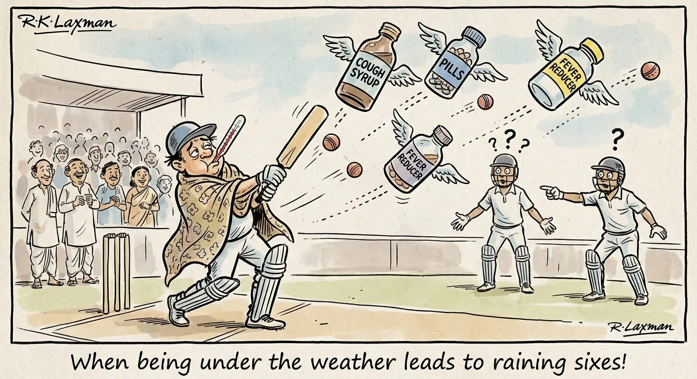
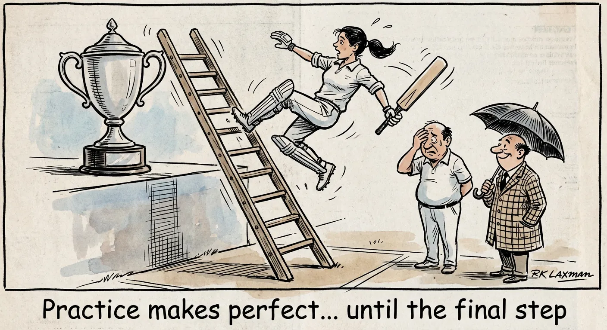
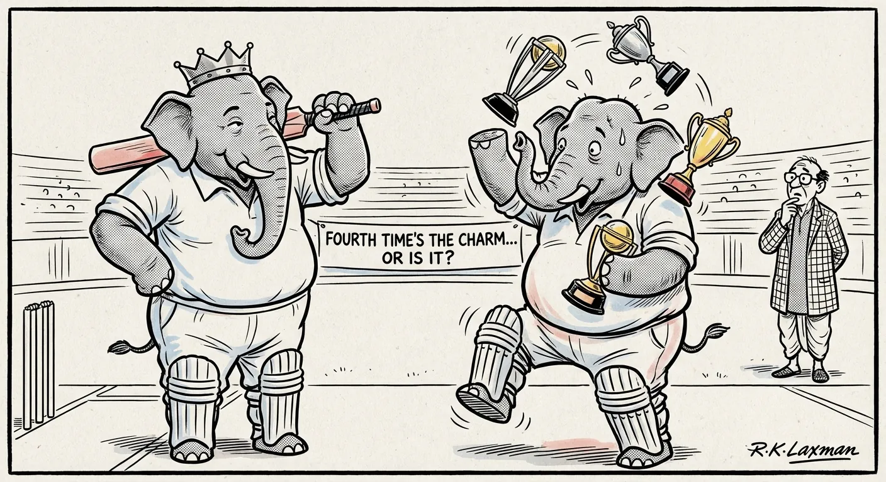
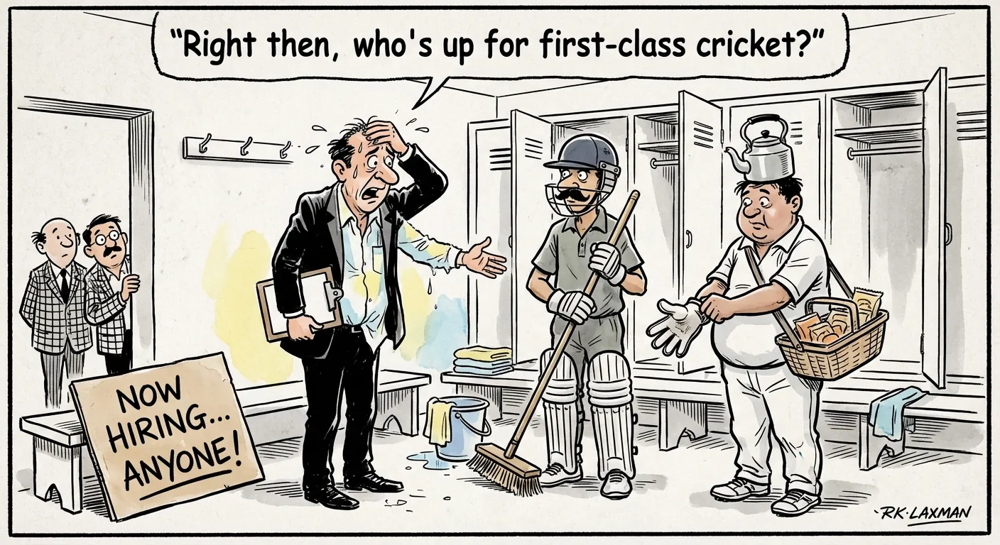
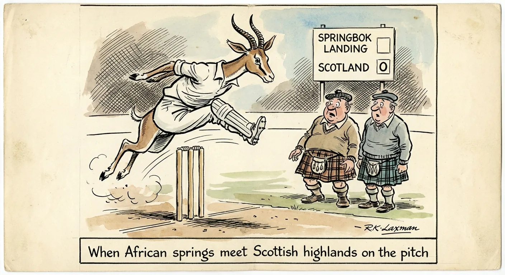
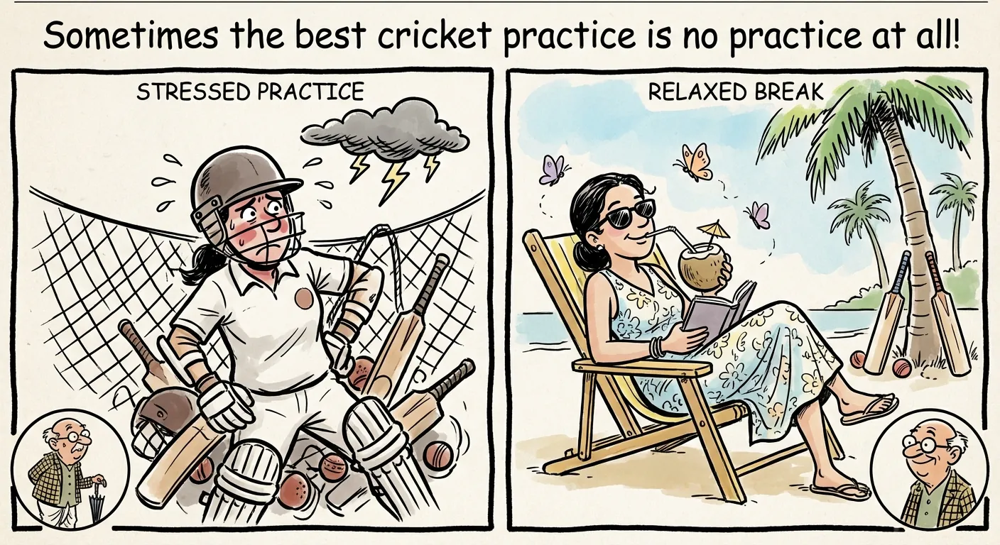

2026-02-08

When you have to be a one-man army in cricket...
Herculean Bell and Doran's stunner seal thriller for Tasmania
In a tense cricket match, Tasmania beats Western Australia thanks to impressive bowling by Gabe Bell and spectacular wicketkeeping by Jake Doran, leaving WA at bottom of table.
2026-02-06

When your bowling attack needs a medical degree
Hazlewood ruled out of T20 World Cup, Australia wait to name replacement
Australian cricket team faces setback as key bowlers withdraw from T20 World Cup due to injuries, leaving team scrambling for replacements just days before tournament.
2026-02-06

When being under the weather leads to raining sixes!
Smriti Mandhana overcomes 'massive flu' to play title-winning innings for RCB
Cricket team captain fights through severe flu to score 87 runs and lead her team to championship victory, while keeping her illness secret from teammates.
2026-02-06

Practice makes perfect... until the final step
DC coach Jonathan Batty: If you keep putting yourself in finals, you will win one
Delhi Capitals cricket team loses their fourth consecutive WPL final despite strong performance. Coach remains optimistic about future victories.
2026-02-05

When bowling down the middle means playing both sides
Fergus O'Neill moves to Sydney Sixers amid talk over Victoria future
Cricket bowler switches teams from Melbourne to Sydney amid speculation about state loyalty. His career move highlights tension between state teams competing for talent.
2026-02-05

Fourth time's the charm... or is it?
DC's fourth shot at elusive trophy as RCB look to make winning a habit
Delhi Capitals and Royal Challengers Bengaluru face off in WPL cricket final. DC seeks first trophy in fourth attempt while RCB aims for continued success.
2026-02-05

Right then, who's up for first-class cricket?
Sheffield Shield team news - all the squads as the tournament resumes
Australian cricket teams juggle player availability as Sheffield Shield tournament resumes, with many star players absent due to T20 World Cup and other commitments.
2026-02-04

Breaking records? Just another day at youth camp!
India ace record chase to make Under-19 World Cup final
India's Under-19 cricket team chases down record target of 311 runs to reach World Cup final, overcoming early dropped catches and making history.
2026-02-04

When African springs meet Scottish highlands on the pitch
Frylinck, Steenkamp set up Namibia's win against Scotland
In a T20 World Cup warm-up match, Namibia defeated Scotland by 6 runs in a high-scoring game. Scotland came close but fell short chasing 227 despite an impressive 95-run innings.
2026-02-04

Sometimes the best cricket practice is no practice at all!
Mandhana and Rodrigues chill out before WPL final
Two cricket team captains discuss taking breaks and relaxing before a big final match, emphasizing the importance of not overthinking or overtraining.